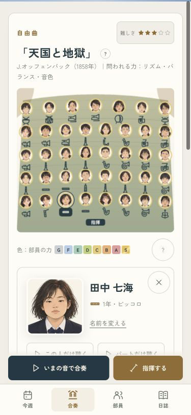
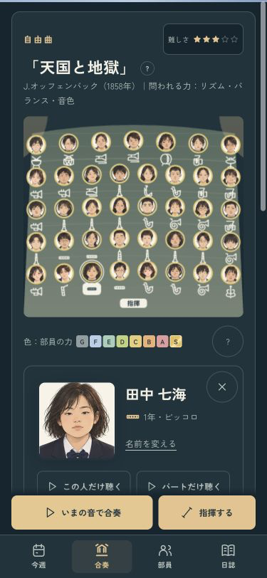
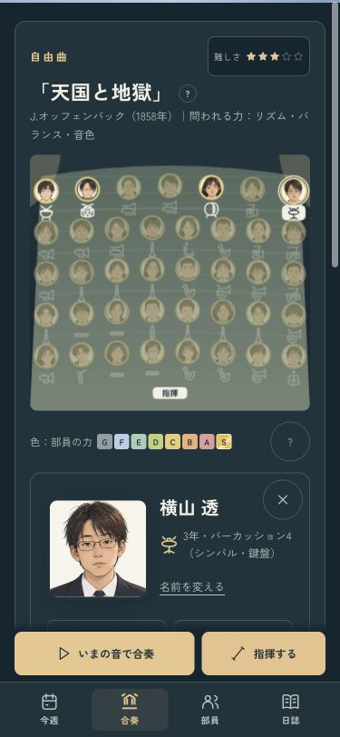
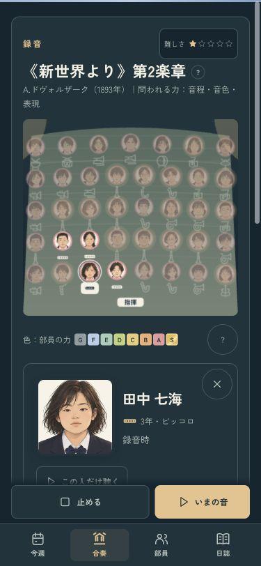
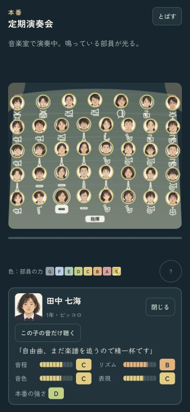
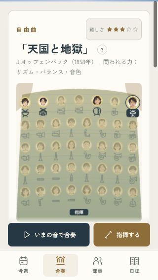

吹奏楽部のつくりかた · 舞台の改善
舞台の、どの子を見ているか。
選んだ顔を少し大きく、楽器の印にも背景を。部員カードと舞台の席を見比べやすくしました。
375px · ライト
375px · ダーク
顔でも、楽器でも、同じ本人へ。
楽器の背景の下端で、下の列の部員を選んでしまう境界も修正。39席すべてで、顔と楽器の下端から同じ本人を開けることを確認しました。
端の席も、選んだ楽器を見つけやすい
昔の録音では、あのころの本人を
本番と、小さい画面でも
本番の舞台でも、本人とカードがつながる
320px · 端の席も表示
375px両テーマ・4タブ、320px、昔の録音、本番表示を確認。席の位置・力の色・音・採点・成長・保存は変更していません。iPhone用Releaseビルド成功。実機は現在接続できず、実機表示は未確認です。